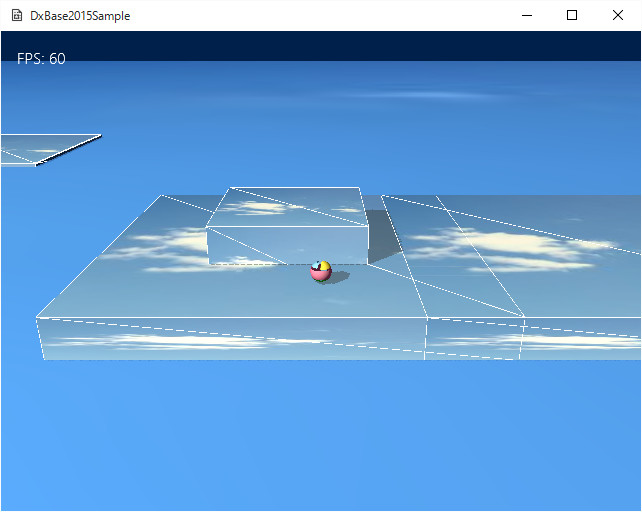

図3011a
この音は、Sample307のメニュー項目を変化させるときに使用した音と同じです。wavファイルですから、簡単に別の音に差し替えることができます。
void GameStage::CreateResourses(){
//中略
wstring CursorWav = App::GetApp()->m_wstrRelativeDataPath + L"cursor.wav";
App::GetApp()->RegisterWav(L"Cursor", CursorWav);
}
void Player::Create(){
//中略
//サウンドを登録.
auto pMultiSoundEffect = AddComponent<MultiSoundEffect>();
pMultiSoundEffect->AddAudioResource(L"Cursor");
//中略
}
void Player::Update2(){
auto ColPtr = GetComponent<Collision>();
if (ColPtr->GetHitObject()){
auto PtrSpark = GetStage()->GetSharedGameObject<MultiSpark>(L"MultiSpark", false);
if (PtrSpark){
PtrSpark->InsertSpark(GetComponent<Transform>()->GetPosition());
}
auto pMultiSoundEffect = AddComponent<MultiSoundEffect>();
pMultiSoundEffect->Start(L"Cursor", 0, 0.5f);
}
//中略
}